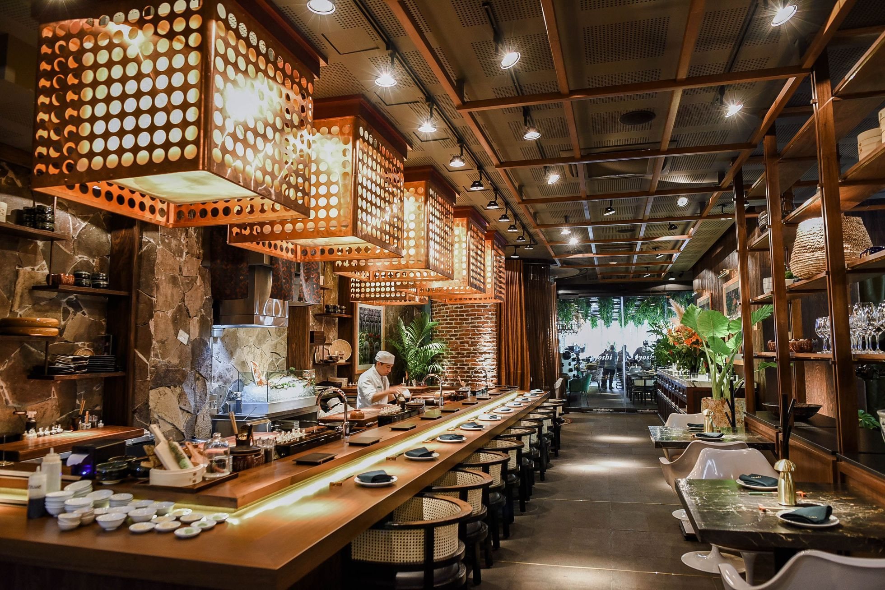

Sobre o Nori
Buscamos oferecer sabores autênticos e uma experiência cultural única!

Criado com o propósito de proporcionar uma verdadeira experiência da culinária japonesa, o Nori busca unir tradição, qualidade e conforto em um só lugar. Nosso restaurante valoriza ingredientes selecionados, apresentações delicadas e o respeito à cultura japonesa, mas com um toque moderno, trazendo autenticidade em cada prato servido.
Mais do que oferecer refeições, queremos criar momentos especiais, acolhendo cada cliente com um ambiente agradável, atendimento atencioso e sabores marcantes. Nosso objetivo é fazer com que cada visita seja uma experiência única, capaz de conectar pessoas através da gastronomia.